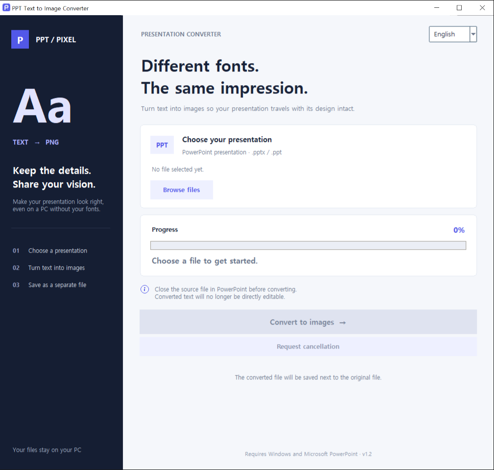

파일 확인과 진행률
선택한 파일의 경로와 변환 진행률을 보여줍니다. 작은 창에서는 스크롤해 보세요.
v1.4 · 출시
발표할 PC에 글꼴이 없어도 사본의 글자는 그대로 보입니다. 원본 PPT는 계속 편집할 수 있습니다.
Windows 10 / 11 · Microsoft PowerPoint 필요


선택한 파일의 경로와 변환 진행률을 보여줍니다. 작은 창에서는 스크롤해 보세요.
복제한 도형에서 이미지를 만든 뒤 기존 도형을 교체합니다. 회전 각도와 겹침 순서를 맞추고, 복구에 실패하면 저장을 멈춥니다.
결과 화면에 변환 건수와 경고·오류 건수가 표시됩니다. 경고나 오류가 있으면 ‘보고서 저장’을 눌러 내용을 텍스트 파일로 저장하세요.
표·차트·SmartArt는 변환을 건너뜁니다. 보고서에 나온 슬라이드에서 해당 도형을 확인하세요.
슬라이드 3 · 도형 «Table 2»
경고 · 표의 표시 상태를 확인하세요.‘파일 찾아보기’나 Ctrl+O로 .ppt 또는 .pptx 파일을 여세요.
PowerPoint에서 원본 파일을 닫으세요. 앱에서 ‘이미지로 변환하기’를 누르고 안내를 확인하세요.
‘결과 파일 열기’로 사본을 확인하세요. 경고가 있으면 보고서에 표시된 슬라이드를 살펴보세요.
변환할 Windows PC에 PowerPoint가 설치되어 있고 원본 PPT의 글꼴을 사용할 수 있어야 합니다.
텍스트가 들어 있는 도형 전체가 이미지로 바뀝니다. 글자를 고치거나 검색할 때는 원본 PPT를 사용하세요.
변환하면 그룹이 풀립니다. 표·차트·SmartArt는 변환 대상에서 제외됩니다. 슬라이드 마스터, 노트, 애니메이션, 하이퍼링크는 보존을 보장하지 않으므로 공유 전에 확인하세요.
이미지로 바꾼 글자에도 글꼴의 사용·배포 조건이 적용됩니다.
Microsoft PowerPoint 필요
v1.4 설치 프로그램 다운로드 ↓포터블 버전 다운로드SHA-256 체크섬 전체 변경 사항 보기 ↗